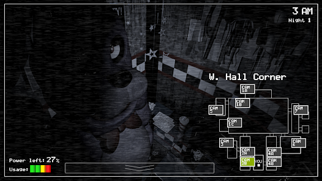
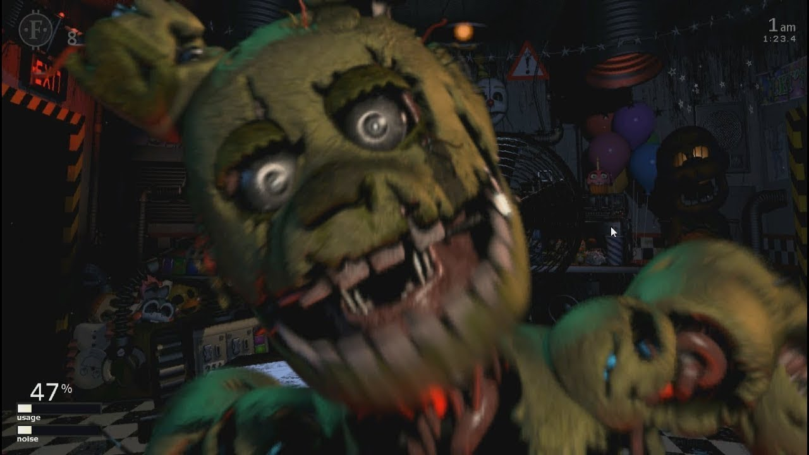

Five Nights at Freddy's (FNaF) é uma franquia de mídia norte
americana criada por Scott Cawthon. O primeiro jogo com o
mesmo nome foi lançado em 8 de agosto de 2014, depois de seu
lançamento a série se tornou um sucesso mundial.
A série original consiste em 9 jogos, sendo o lugar principal
a pizzaria fictícia de uma franquia chamada "Freddy Fazbear's
Pizza", com o seu mascote principal, o urso animatrônico Freddy
Fazbear. Na maioria dos jogos, o jogador aceita o emprego de guarda
noturno, onde deve checar as câmeras de segurança, luzes e
portas para se defender de assustadores personagens animatrônicos
que habitam a pizzaria. A historia da série é gradualmente revelada
por meio de gravações de voz, mini jogos e Easter eggs.
A franquia também inclui jogos spin-off e outras mídias, como
um novo filme em produção e uma série antológica, complementando
um universo ficcional abrangente. A franquia mantém uma base de fãs
ativa, conhecida por sua produção de fan art e fangames, e
produtos para os jogos estão disponíveis internacionalmente.
Jogabilidade
Five Nights at Freddy's consiste em jogos de vídeo-horror, onde cada jogo possui diferenças na jogabilidade. Nos dois primeiros jogos, o jogador assume o papel de um segurança noturno na Pizzaria Freddy Fazbear's Pizza, uma pizzaria semelhante as franquias ShowBiz Pizza Place e Chuck E. Cheese's. O restaurante conta também com bonecos animatrônicos que cantam e dançam para o entretenimento do público. Estes animatrônicos andam livres pelo restaurante durante a noite por motivos técnicos, e o jogador é instruído a manter vigilância sobre estes, pois apresentam comportamento hostil durante a noite, podendo chegar ao ponto de tentar atacá-lo por achar que o segurança é um endoesqueleto de um animatrônico fora da roupa. Nos 3 primeiros jogos da série, o jogador permanece num escritório, e tem a capacidade de usar um sistema de monitoramento baseado em uma tela para observar os robôs através de várias câmeras espalhadas pelo local, embora só possa ver uma câmera por vez.

Enredo
Ambientado no ano de 1993, o personagem principal, cujo nome mais tarde se revela ser Michael Afton "filho do vilão", começou num emprego de guarda de segurança noturno no restaurante da Pizzaria Freddy Fazbear. Uma mensagem de voz deixada gravada pelo antecessor de Mike explica que os personagens animatrônicos utilizados no restaurante - Freddy Fazbear, Bonnie the Bunny, Chica t he Chicken e Foxy the Pirate Fox - são deixados funcionando e perambulando livremente pelo estabelecimento durante a noite, porque caso ficassem desligados por muito tempo, seus motores travariam. Ele acrescenta que não se permitia mais que os animatrônicos perambulassem livremente durante o dia desde um incidente conhecido como "a Mordida de 87", em que aparentemente no ano de 1987 um cliente ou funcionário havia sido mordido por um animatrônico e perdeu o lobo frontal, além de ter ficado em coma. O funcionário avisa a Mike que se um dos robôs encontrar uma pessoa à noite, irão achar que se trata de um endoesqueleto de animatrônico ainda sem revestimento, e o introduzirão a força em um revestimento mecânico que acaba matando-o no processo. Algum tempo depois, graças a cartazes vistos no canto do corredor principal, livros e inigames dos jogos seguintes, é descoberto que os animatrônicos movem-se sozinhos porque há almas de crianças dentro dos bonecos. segundo os cartazes e nos outros jogos, cinco crianças identificadas como Gabriel, Susie, Jeremy, Fritz e Cassidy foram mortas por um homem chamado William Afton que usava uma fantasia de coelho animatrônico, e dizem que o s corpos das crianças foram colocados dentro das mascotes. Inexplicavelmente, as almas das vítimas tomaram controle dos animatrônicos, e eles atacam o jogador pois acham que ele é o assassino.

Five Nights at Freddy's is a 2023 American supernatural horror film based on the video game franchise of the same name created by Scott Cawthon. Directed by Emma Tammi, who co-wrote the screenplay with Cawthon and Seth Cuddeback, from a story by Cawthon, Chris Lee Hill, and Tyler MacIntyre, the film stars Josh Hutcherson as a troubled security guard who accepts a night-time job at an abandoned family entertainment center, where he discovers its four animatronic mascots come alive and are prone to murder. Elizabeth Lail, Piper Rubio, Mary Stuart Masterson, and Matthew Lillard appear in supporting roles. Development of a Five Nights at Freddy's film adaptation began in April 2015, with the involvement of Warner Bros. Pictures. Roy Lee, David Katzenberg, and Seth Grahame-Smith were set to produce it, with Gil Kenan announced as director and co-writer. After several delays in production, the Warner Bros. version was no longer moving forward and Kenan dropped out of the project. In March 2017, Jason Blum's Blumhouse Productions was announced as the new production company, with Chris Columbus set to direct and co-write. Columbus also ultimately left the project, and Emma Tammi was announced as his replacement in October 2022. The main cast were confirmed in December, while other cast additions were signed in March 2023. Filming began in February 2023 in New Orleans and ended in April, with a $20 million budget. Five Nights at Freddy's was released on Peacock on October 26, 2023, and was theatrically released a day later, on October 27, by Universal Pictures. The film received negative reviews from critics but was successful at the box office, grossing over $130.6 million and setting several box office records for Blumhouse.
ASSISTA JÁ...

five-nights-at-freddys

five-nights-at-freddys 2
five-nights-at-freddys 3

five-nights-at-freddys 4
five-nights-at-freddys 5
POR ENQUANTO É ISSO...
- Github
- Youtube